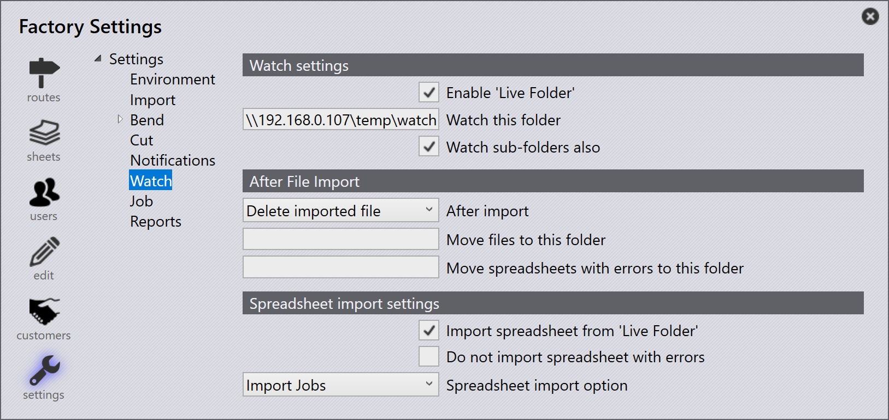

Guarda

Watch settings
Enable 'Live Folder' - Impostare questa opzione per abilitare la cartella live.
Watch this folder - Impostare questo come posizione in cui Praxis "guarderà".
Watch sub-folders also - Abilitare questa opzione affinché Praxis controlli anche le sottocartelle all’interno della posizione sopra indicata.
After File Import
After import - Dopo l’importazione del file, l’utente ha due opzioni: il file può essere eliminato dalla posizione o spostato in una posizione diversa.
Move files to this folder - Se l’opzione di cui sopra è quella di spostare il file in una posizione diversa; inserire qui la posizione in cui il file deve essere spostato.
Move spreadsheets with errors to this folder - Se si riscontrano errori in un foglio di calcolo, questo può essere spostato in una posizione diversa, che può essere indicata in questa sezione.
Spreadsheet import settings
Import spreadsheet from 'Live Folder' - Abilitare questa opzione per consentire a Praxis di importare i fogli di calcolo trovati nella posizione della cartella live.
Do not import spreadsheet with errors - Abilita questa opzione per Praxis per non importare fogli di calcolo con errori. Possono essere spostati in una posizione diversa, come indicato sopra, per essere modificati.
Spreadsheet import option - Questa opzione può impostare un tipo di importazione predefinito, che può essere una delle seguenti opzioni in base alla licenza disponibile.
-
Importa job
-
Importa ordini
-
Importa gruppi costruttivi